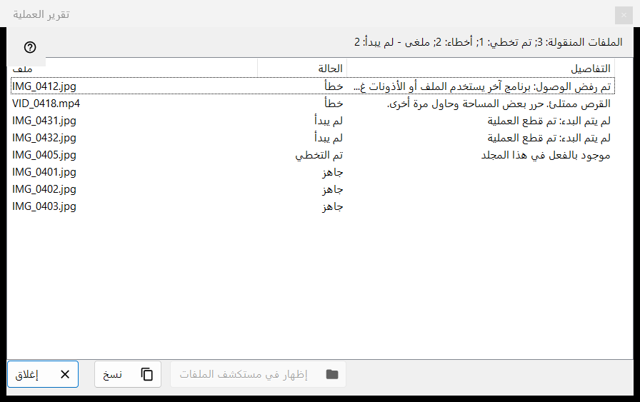
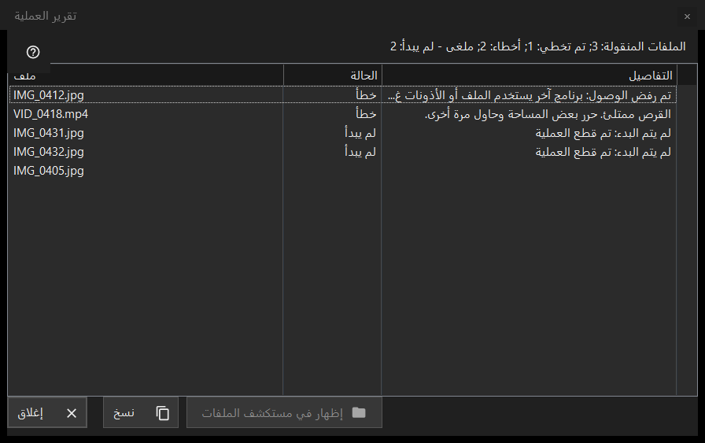

تقرير العملية
الغرض من هذه النافذة
يسرد ما حدث لكل ملف في آخر عملية جماعية (نقل أو نسخ أو حذف أو تراجع) وسبب تخطي أي شيء أو فشله. لا يُفتح من تلقاء نفسه: انقر سطر التقرير أسفل لوحة الصور المصغرة (F3) بعد التشغيل. وعندما لا يكون التشغيل نظيفًا ينتهي السطر بعبارة انقر لعرض التفاصيل.


بهذا الترتيب
- نفّذ عملية على عدة ملفات في لوحة الصور المصغرة.
- اقرأ سطر الملخص أسفل اللوحة.
- انقر السطر لفتح هذه النافذة.
- انظر إلى أعلى القائمة: الإخفاقات تأتي أولاً.
- حدّد صفوفًا ثم استخدم الزر نسخ لأخذ مساراتها أو الزر إظهار في مستكشف الملفات للعثور على ملف.
عناصر النافذة
سطر الملخص
يبدأ السطر بالنتيجة: الملفات المنقولة: 5 أو الملفات المنسوخة: 5 أو الملفات المحذوفة: 5 أو الملفات المستعادة: 5 أو العمليات المكتملة: 5. وتظهر أجزاء أخرى، لكل منها عدده، فقط عندما لا يكون العدد صفرًا: تم تخطي؛ أخطاء؛ عمليات بلا تراجع؛ محذوف نهائيًا، لا يمكن استعادته؛ وعندما يتوقف التشغيل مبكرًا: مقطوع، لا يوجد اتصال بالمجلد - لم يبدأ (ثلاث محاولات اتصال فاشلة متتالية توقفه) أو ملغى - لم يبدأ.
القائمة
الأعمدة: ملف، الحالة، التفاصيل. أسوأ الصفوف أولاً: الفاشلة، ثم التي لم تبدأ، ثم المتخطاة، ثم المنجزة؛ وداخل المجموعة تحتفظ الملفات بترتيب التشغيل. يعرض تلميح الصف المسار الكامل. تعطي التفاصيل سببًا واضحًا للفشل، والمجلد الوجهة للملف المنجز، وعبارة محفوظ كـ مع الاسم الجديد عندما كان الاسم القديم مأخوذًا، وعبارة حُذف نهائياً - التراجع غير متاح للحذف الذي تجاوز سلة المحذوفات.
الحالات وأسباب التخطي
الحالات: جاهز؛ خطأ؛ تم التخطي؛ لم يبدأ. يذكر الملف المتخطى السبب: موجود بالفعل في هذا المجلد؛ الملف لم يعد موجودًا على القرص؛ لا يتم تعديل الملفات داخل الأرشيف؛ الاسم نفسه موجود بالفعل بين الملفات المحددة؛ المورد للقراءة فقط؛ هذا هو الملف نفسه؛ أو الاسم مستخدم بالفعل في مجلد الوجهة. ويقول الملف الذي لم يبدأ: لم يتم البدء: تم قطع العملية.
إظهار في مستكشف الملفات ونسخ وإغلاق
الزر إظهار في مستكشف الملفات متاح عند تحديد صف؛ يفتح نافذة مجلد مع تمييز أول ملف محدد، أو المجلد نفسه إذا انتقل الملف. الزر نسخ (وكذلك Ctrl+C) يضع المسارات الكاملة للصفوف المحددة في الحافظة، مسارًا في كل سطر، أو مسارات كل الصفوف إذا لم يُحدَّد شيء: طريقة سريعة لتمرير قائمة الملفات المشكلة. الزر إغلاق ينهي التقرير.